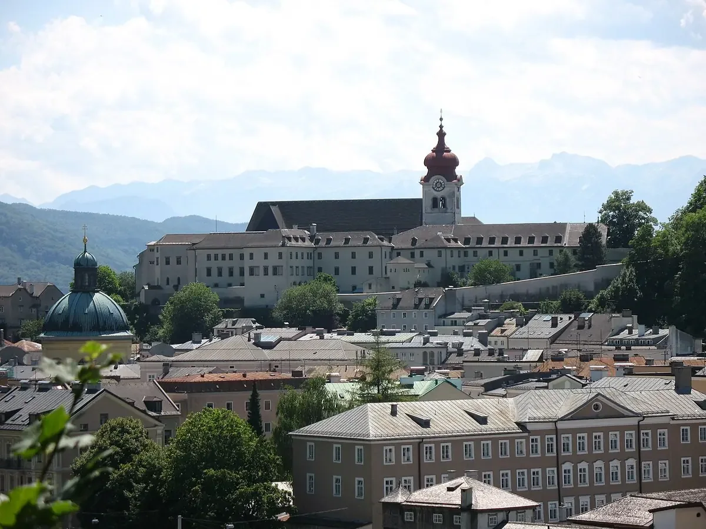
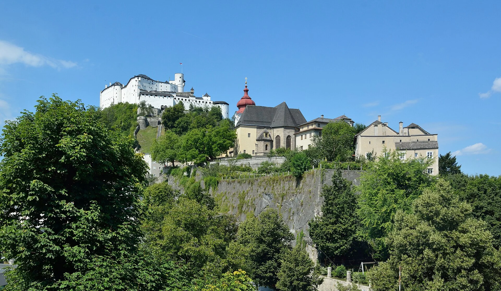
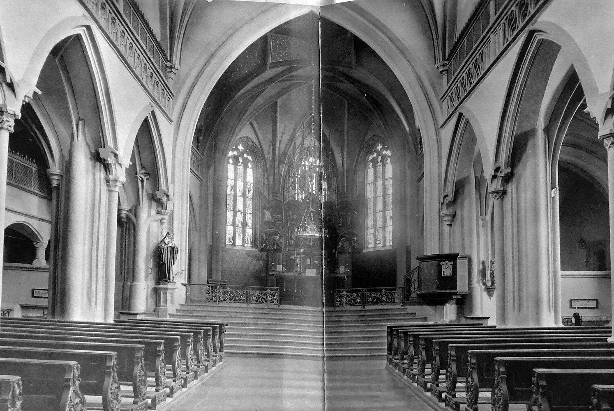
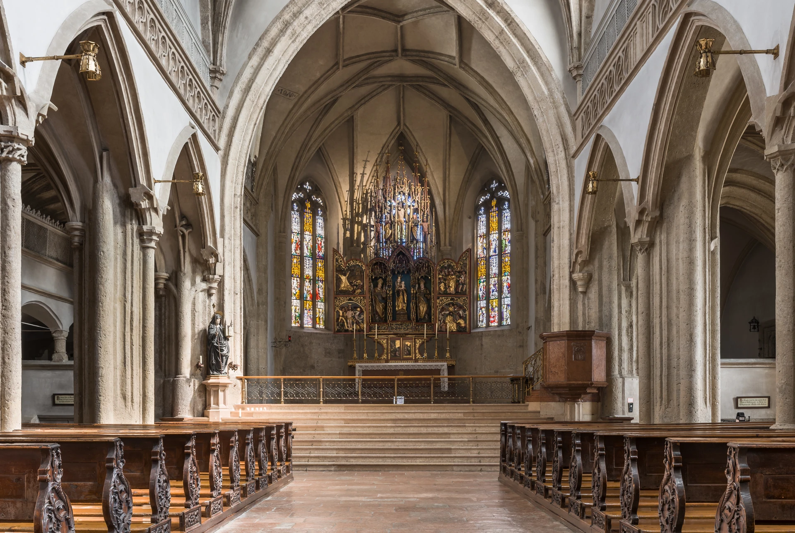
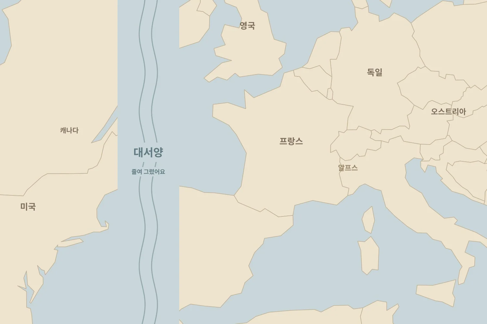
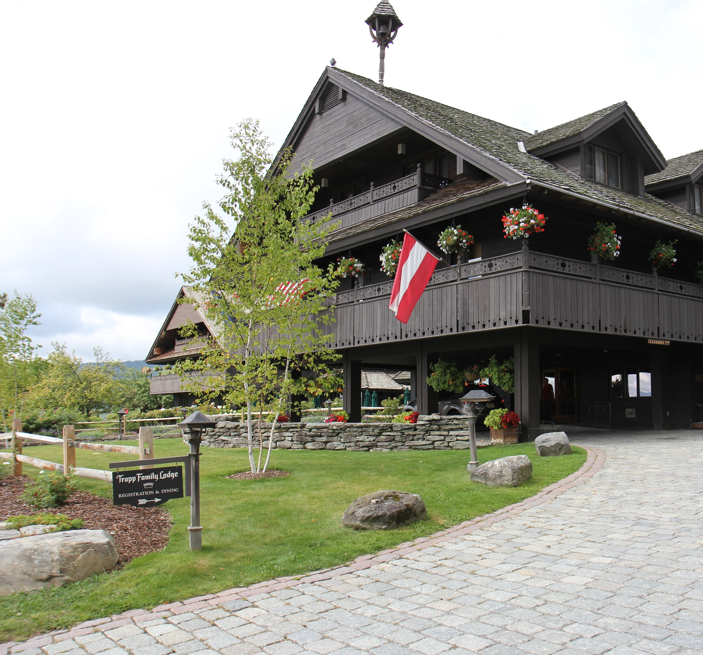

아직 펼치지 않은 카드기도하고 일하는 사람들 · 7논베르크 수녀원과 진짜 트랍 가족영화 「사운드 오브 뮤직」의 가족은 노래하며 알프스를 걸어 넘어가요. 진짜 가족은 어떻게 떠났을까요?「사운드 오브 뮤직」 알아? 진짜 마리아가 살던 수녀원이 있대!
1926 · 1927 · 1938 · 1939 · 1942년잘츠부르크 논베르크 → 이탈리아 → 런던 → 뉴욕 → 버몬트
논베르크 수녀원과 진짜 트랍 가족
영화 속 가족은 노래하며 알프스를 걸어 넘어요. 진짜 가족은 ‘아무 일 없는 척’ 기차에 올랐어요. 수녀원 성당에서 시작해, 기차와 배로 건넌 그 길을 지도 위에서 따라가 보세요.
「사운드 오브 뮤직」의 진짜 가족 이야기야. 산을 걸어 넘지 않고 기차랑 배를 탔대. 같이 따라가 볼까?
검수 전 시안이에요(기준서 1판 보탬 11). 가족의 이야기는 미국 국립문서보관소의 글(2005)을, 수녀원은 잘츠부르크 관광청 누리집을, 버몬트의 집은 트랍 가족 로지 누리집을 따랐어요. 인용은 이 안내서가 우리말로 옮겼어요. 지도는 이 안내서가 그렸고 대서양은 줄여 그렸어요. 상상은 ‘눈 감고 상상해 보기’에만 썼어요.
시안 확인용카드 단계 미리 보기
1
수녀원에서 온 선생님
잘츠부르크 성채 바로 아래, 붉은 양파 모양 탑이 선 곳이 논베르크 수녀원이에요. 711~715년 사이에 세워졌고, 첫 원장은 에렌트루디스였어요. 지금도 베네딕도회 수녀들이 이곳에서 기도하며 살아요.
마리아 쿠체라는 빈의 국립 교사 대학에서 공부한 뒤, 이 수녀원에 들어와 수련을 받고 있었어요.

1926년, 수녀원은 그녀를 게오르크 폰 트랍의 집에 보냈어요. 성홍열을 앓고 회복 중이던 딸 마리아를 가르치는 일이었어요. 교사 공부를 한 것이 그녀를 고른 까닭 가운데 하나였대요.
계획은 열 달이었어요. 열 달이 지나면 수녀원으로 돌아와 정식으로 들어올 생각이었대요. 이듬해 그녀는 정말 이 수녀원으로 돌아왔어요. 결혼식을 올리러요.
진짜 마리아가 살던 수녀원이야. 마리아는 아픈 딸 한 명을 가르치러 갔대.
물어보기열 달만 있다가 돌아오기로 했대. 마리아는 어떻게 돌아왔을까?
2
수녀원 성당의 결혼식
1927년 11월 26일, 마리아와 게오르크는 이 수녀원 성당에서 결혼했어요. 영화의 결혼식 장면은 몬트제의 성당에서 찍었지만, 진짜 결혼식은 여기였어요.
아래 사진은 같은 자리에서 제대 쪽을 본 1890년대와 2022년의 모습이에요. 탭으로 바꿔 보세요. 두 사람의 결혼식은 그 두 때 사이에 있었어요.


“나는 아이들을 사랑했어요. 그러니 어떤 면에서는 아이들과 결혼한 거예요.”
마리아 폰 트랍의 자서전 『마리아』(1972) · 미국 국립문서보관소 「프롤로그」(2005)에서 · 이 안내서가 옮김
같은 책에서 마리아는, 처음엔 그를 좋아했을 뿐 사랑에 빠진 건 아니었다고 솔직하게 적었어요. 그리고 뒤에는 그를 누구보다 사랑하게 되었다고 했어요.
마리아랑 게오르크가 결혼한 성당이야. 옛날 사진이랑 지금 사진을 바꿔 봐!
물어보기두 사진에서 그대로인 건 뭐야? 달라진 건?
3
기차와 배로 건넌 길
1938년, 나치 독일이 오스트리아를 합병했어요. 그해 6월, 트랍 가족은 기차를 타고 이탈리아로 떠났어요. 음악을 이끌던 프란츠 바스너 신부와 비서 마르타 초흐바우어도 함께였어요.
‘다음 곳으로’를 눌러 그 길을 따라가 보세요. 대서양은 줄여 그린 지도예요.
‘다음 곳으로’를 눌러, 잘츠부르크에서 뉴욕까지 가족이 간 길을 따라가 보세요.

잘츠부르크이탈리아런던뉴욕이 안내서가 그린 길잡이 지도. 대서양은 줄여 그렸어요. 선은 들른 차례를 이은 것이고, 이탈리아의 점은 나라를 가리켜요 · 이 안내서가 그린 지도 · 나라 모양은 Natural Earth(퍼블릭 도메인)를 바탕으로
알프스를 걸어 넘은 길이 아니었어요. 기차로 국경을 건너고, 배로 바다를 건넌 길이었어요.
“아무 일 없는 척하며, 기차를 타고 떠났어요.”
딸 마리아 폰 트랍, 「오페라 뉴스」 인터뷰(2003) · 미국 국립문서보관소 「프롤로그」(2005)에서 · 이 안내서가 옮김
딸 마리아는 그 인터뷰에서, 사람들에게는 미국에 노래하러 간다고 말했고 무거운 가방과 악기를 들고 산을 넘지도 않았다고 했어요.
진짜 가족은 산을 걸어 넘지 않았어. 기차를 타고, 배를 탔대!
물어보기사람들한테는 노래하러 간다고만 말했대. 왜 그랬을까?
4
다시는 떠나고 싶지 않아요
1939년 1월, 필라델피아에서 아들 요하네스가 태어났어요. 여섯 달짜리 방문 비자가 끝나자 가족은 짧게 스칸디나비아 공연을 다녀왔어요.
1939년 10월, 다시 뉴욕에 닿은 가족은 엘리스섬에 붙잡혀 이민국의 조사를 받았어요. 미국 국립문서보관소의 글은, 머물 기간을 묻는 직원에게 마리아가 한 대답 때문이었던 것 같다고 적어요. 가족은 며칠 만에 풀려나 다음 공연 여행을 떠났어요.

1942년, 가족은 버몬트주 스토의 옛 게일 농장 땅 일부를 사서 ‘한마음(Cor Unum)’이라고 불렀어요. 1950년 여름부터는 손님을 맞기 시작했고, 지금도 트랍 집안이 이 로지를 꾸려 가요.
마리아는 1987년 3월 28일 세상을 떠나, 이곳 가족 묘지에 묻혔어요.
1939년 10월, 엘리스섬. 직원이 “얼마나 머물 건가요?” 하고 물어요. 마리아의 자리라면 뭐라고 답할까요?
미국에 와서 버몬트 언덕에 새 집을 지었어. 지금은 손님들이 묵는 큰 산장이야.
물어보기마리아는 미국 직원한테 뭐라고 대답했을까?
눈 감고 상상해 보기
1938년 6월, 기차가 잘츠부르크를 떠나요. 창밖으로 성채와 수녀원 탑이 멀어져요. 가방은 몇 개 되지 않아요. 사람들에게는 노래하러 간다고만 말했어요. 덜컹거리는 객차 안, 아이들은 아무 일 없는 척 창밖의 산을 바라봐요. 저 산을 걸어서 넘을 필요는 없어요. 기차가 국경을 건너 줄 테니까요.
눈을 감아 봐. 칙칙폭폭, 기차가 떠나. 창밖으로 산이 지나가. 우리는 산을 걸어서 넘지 않아. 기차가 데려다줘!
나의 자리
처음엔 이 가족이 산을 걸어 넘었다고 여겼나요? 아무 일 없는 척 기차에 오른 가족을 떠올리면, 이제 무엇이 달리 보이나요?
영화에서는 산을 넘었지? 진짜로는 기차를 탔어. 기차 안에서 아이들은 무슨 생각을 했을까?
마음에 닿는 한 줄을 고르거나 직접 써 보세요. 한 줄을 남기면 이 자리의 도장이 찍혀요. 이 기기에만 저장돼요.
더 깊이
궁금한 칸만 펼쳐 읽어도 괜찮아요.
알고 보면
성당의 보물 이 성당은 황제 하인리히 2세가 1000년 무렵 지은 로마네스크 바실리카에서 시작했고, 1009년 하느님의 어머니께 봉헌되었어요. 지금 모습은 고딕이에요. 늦은 고딕의 날개 제단(문짝을 여닫는 제단), 12세기 중반의 벽화, 수녀석 아래 ‘낙원’의 벽화, 기둥이 홀로 선 지하 성당이 있고, 첫 원장 에렌트루디스의 바위 무덤도 있어요.
함께 떠난 신부 영화 속 공연 기획자 막스는 지어낸 인물이에요. 실제로는 가족의 신부 프란츠 바스너가 20년 넘게 음악 감독을 맡았어요.
영화와 다른 점 아이는 일곱이 아니라 열 명이었고, 이름과 나이, 성별도 바뀌었어요. 가족은 마리아가 오기 전부터 음악을 좋아했지만, 마드리갈(여러 성부로 부르는 노래)은 마리아가 가르쳤어요. 게오르크도 차갑고 엄한 아버지가 아니라 다정하고 음악을 즐기는 아버지였대요.
미국 시민이 되기까지 1944년 마리아와 의붓딸 다섯이 미국 시민권을 신청해 1948년에 받았어요.
버몬트의 로지 옛 로지는 1980년 12월 20일 불에 탔고, 까닭은 아직 몰라요. 1981년 다시 짓기 시작해 1983년 12월 첫 손님을 맞았고, 1984년 마리아가 새 로지를 봉헌했어요. 2025년에는 ‘폰 트랍 가족 로지 앤 리조트’로 이름을 바꿨어요.
함께 보면 좋은 카드 베네딕도 규칙서가 처음 쓰인 몬테카시노, 바위 위에서 900년을 이어 온 멜크 수도원 이야기도 이 세트에 있어요.
기록마다 다른 점
수녀원에서의 자리 미국 국립문서보관소 글은 마리아가 ‘수련 수녀(novice)’로 들어갔다고 적고, 잘츠부르크 관광청은 ‘지원자(Kandidatin)’라고 적어요. 앞면 이야기는 ‘수련 지망생’이에요.
누구를 가르쳤나 국립문서보관소 글은 성홍열에서 회복 중인 딸 마리아 한 명의 가정교사였다고 하고, 잘츠부르크 관광청은 일곱 아이를 돌보러 갔다고 적어요.
이탈리아에서 런던까지 잘츠부르크의 한 관광 회사 누리집은 스위스와 프랑스를 지나 런던으로 갔다고 적고, 휴스턴 그랜드 오페라의 연표(2024)는 이탈리아·네덜란드·영국을 들어요.
엘리스섬에 붙잡힌 까닭 국립문서보관소 글도 마리아의 말 때문이었던 ‘것 같다’고 조심스럽게 적어요. 그때의 조사 기록에는 가족의 신분에 대한 혼란을 풀기 위해서라고 적혀 있대요.
공연을 그친 해 트랍 가족 로지 누리집은 첫머리에 ‘1938~1955년’의 공연이라고 적고, 같은 쪽 연표에는 1956년에 미국 마지막 공연이 있어요. 앞면 이야기는 합창단이 1957년에 해산했다고 적어요.
직접 가 보기
확인한 날 · 2026년 11월 18일 · 바뀌기 쉬운 정보라 정기적으로 다시 확인해요
논베르크 수녀원은 잘츠부르크 구시가지 위 언덕에 있어요. 수녀원 안(봉쇄 구역)은 들어갈 수 없고, 성당은 아침 6시 반 무렵부터 저녁 6시 무렵(겨울엔 어두워질 때)까지 열어요. 예배 중에는 둘러볼 수 없어요. 입장료 안내는 없어요.
수녀들이 노래로 드리는 저녁기도는 월~토 오후 5시, 일요일·축일 오후 4시 30분이에요(축일 전날은 오후 4시). 11~2월에는 늦어도 하루 전까지 미리 알려야 들을 수 있어요. 알리는 방법은 관광청 누리집에서 확인해 주세요.
버몬트주 스토의 로지는 지금도 트랍 집안이 꾸려 가는 숙소예요. 여는 때와 둘러보기는 로지 누리집에서 확인해 주세요.
기차와 배로 끝까지 금박
잘츠부르크에서 뉴욕까지 네 곳을 끝까지 따라가면 금박이 입혀져요.
잘츠부르크에서 뉴욕까지 네 곳을 끝까지 따라가기
엘리스섬의 대답 채색
둘 가운데 하나만 해도 카드가 채색돼요.
엘리스섬에서 마리아의 자리로 대답 고르기
아이와 함께 ‘영화처럼 보기’를 끝까지 보기
근거 보기 (8)
- 조앤 기어린, 「영화와 실제: 트랍 가족의 진짜 이야기」(미국 국립문서보관소 『프롤로그』 37권 4호, 2005년 겨울) — 빈의 국립 교사 대학, 논베르크에 수련 수녀로 들어감, 1926년 성홍열에서 회복 중인 딸 마리아의 가정교사로 감·열 달 계획·교사 공부가 고른 까닭, 1927년 결혼, 자서전 『마리아』(1972)의 말, 자다르 출생·1920년 이탈리아 땅·이탈리아 시민, 미국 공연 기획자와의 계약·뱃삯 부탁, 1938년 6월 기차로 이탈리아·이어 런던·9월 뉴욕행 배·펜실베이니아 공연, 바스너 신부와 비서 초흐바우어 동행, 여섯 달 방문 비자, 1939년 1월 필라델피아에서 요하네스 출생, 스칸디나비아 공연, 1939년 10월 엘리스섬 조사와 마리아의 말, 조사 기록(1939년 10월 7일)의 ‘신분 혼란’, 며칠 만에 풀려남, 1944년 시민권 신청·1948년 시민권, 딸 마리아의 2003년 「오페라 뉴스」 인터뷰, 영화와 다른 점
- 잘츠부르크 관광청 「논베르크 수녀원」 — 711~715년 사이 세움, 첫 원장 에렌트루디스, 베네딕도회 수녀원, 하인리히 2세의 로마네스크 바실리카·1009년 봉헌, 고딕 건축, 늦은 고딕 날개 제단, 12세기 중반 벽화, 수녀석 아래 ‘낙원’ 벽화, 지하 성당과 에렌트루디스의 바위 무덤, 마리아는 ‘지원자’로 일곱 아이를 돌보러 감, 성당 여는 때, 노래로 드리는 저녁기도 시간과 11~2월 미리 알림, 입장료 안내 없음
- 폰 트랍 가족 로지 앤 리조트 「가족 이야기」 — 1927년 11월 26일 결혼, 1938~1955년 공연(연표에는 1956년 미국 마지막 공연), 1942년 옛 게일 농장 일부를 사 ‘한마음(Cor Unum)’, 1950년 여름 손님을 맞음, 1980년 12월 20일 화재(까닭 모름)·1981년 다시 짓기·1983년 12월 첫 손님·1984년 봉헌, 마리아 1987년 3월 28일 별세·가족 묘지, 가족이 소유·운영, 2025년 이름 바꿈
- 잘츠부르크 파노라마 투어 「사운드 오브 뮤직 뒤의 진짜 이야기」 — 마리아는 논베르크 수녀원에서 수련 수녀로 지냈고 그곳에서 결혼함, 영화의 결혼식은 몬트제 성당에서 찍음, 수녀원은 일반에 열려 있지 않음, 1938년 기차로 떠남
- 잘츠부르크 파노라마 투어 「진짜 이야기: 트랍 가족」 — 1927년 11월 26일 결혼, 오스트리아 알프스를 지나 이탈리아 국경을 넘고 스위스·프랑스를 거쳐 런던, 배로 미국, 1938년 9월 뉴욕 도착
- 휴스턴 그랜드 오페라 「사운드 오브 뮤직이 나오기까지: 연표」(2024년 4월 1일) — 1926년 가정교사, 1938년 기차로 이탈리아·네덜란드·영국, 1942년 스토
- 위키미디어 공용 파일 설명(API로 확인): 포토크롬 인쇄(1890~1900년, 미국 의회도서관, 퍼블릭 도메인) · 동쪽에서 본 성채와 수녀원(2022년 7월) · 성당 안 1890년대 사진 · 성당 안(2022년 4월) · 수녀석(2021년 9월) · 트랍 가족 로지(2014년 8월)
- Natural Earth 1:110m 나라 경계(퍼블릭 도메인) — 이 안내서가 그린 지도의 바탕
그림·사진·소리 출처
- 포토크롬 인쇄 모음(미국 의회도서관) · 퍼블릭 도메인 · 위키미디어 공용
- 사진: Herzi Pinki · CC BY-SA 4.0 · 위키미디어 공용
- 사진: Rolf Kranz · CC BY-SA 4.0 · 위키미디어 공용
- 사진: Xenophon 올림 · CC BY-SA 4.0 · 위키미디어 공용
- 사진: Uoaei1 · CC BY-SA 4.0 · 위키미디어 공용
- 사진: Uoaei1 · CC BY-SA 4.0 · 위키미디어 공용
- 이 안내서가 그린 지도 · 나라 모양은 Natural Earth(퍼블릭 도메인)를 바탕으로
- 사진: Royalbroil · CC BY-SA 4.0 · 위키미디어 공용
- 인물 사진이 아니라, 잘츠부르크 언덕 위의 논베르크 수녀원이에요 · 사진: Andrew Bossi · CC BY-SA 2.5 · 위키미디어 공용
‘처음 만나는 기독교 문화’의 깊은 카드예요. 카드 단계와 남긴 글은 이 기기에만 저장돼요.